定义：同一个程序可以同时运行多个实例（如./hello & ./hello），操作系统需要为每个实例创建独立的管理单元，这就是进程
核心问题：操作系统如何抽象和管理多个并行运行的程序？进程就是这个抽象的核心。
早期单任务系统
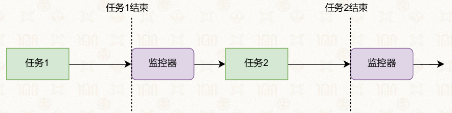
| 884">分时（Time-sharing）操作系统
核心思路：当一个任务需要等待时，操作系统暂停它，切换到其他任务执行。
关键技术：
任务抽象为进程，每个进程有独立的执行状态，进程的执行状态不断更新
上下文切换：保存当前进程的状态，加载新进程的状态，实现CPU时间的复用
进程调度：由操作系统决定下一个执行哪个进程
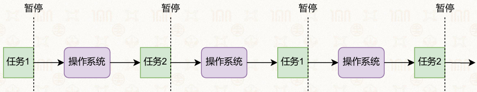
| 936">进程是程序运行时的抽象，由两部分组成：
每个进程都拥有独立的虚拟地址空间
仿佛独占了全部内存资源
内核中同样包含内核栈和内核代码、数据
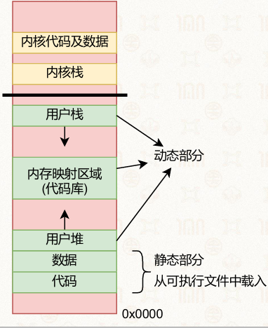
| 382">典型结构（从低地址到高地址）：
查看方式：
新生状态（New）
就绪状态（Ready）
运行状态（Running）
※阻塞状态（Blocked）
终止状态（Terminated）
进程会不断进行状态切换
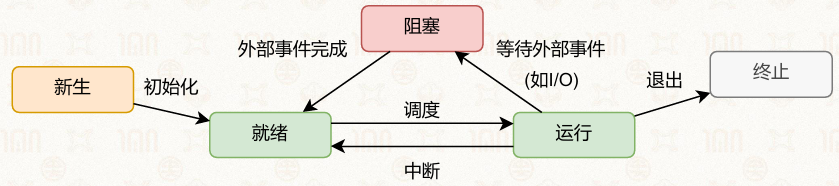
| 839">阻塞不能直接变为运行
Linux在经典五状态基础上，扩展了更细粒度的状态：
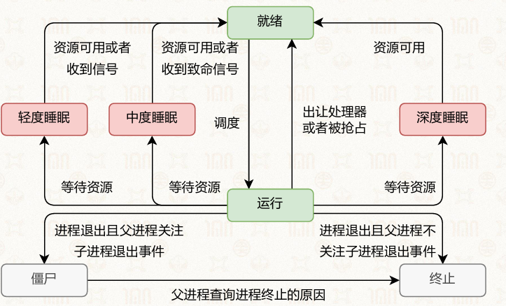
| 723">常见于：Linux与安卓系统里，可执行文件、共享库、目标文件通用标准格式。
组成：
ELF头部，记录文件类型架构入口地址等整体信息
程序段，负责映射进内存，包含代码段只读数据段、数据段未初始化数据段
节头表，存放符号表与调试相关信息
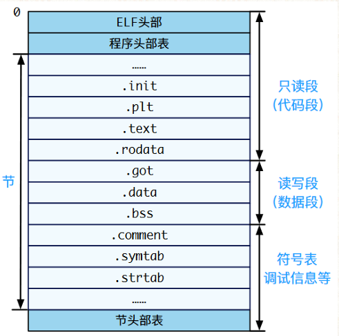
| 491">作用：操作系统为每一个进程单独创建的数据结构，统一管控进程全部信息
存放内容
Linux实际结构：称为task，采用结构体任务结构体实现，内置内存管理结构体、线程上下文结构体等子结构
struct process_v1 {
// 上下文
struct context *ctx;
// 虚拟地址空间
//（包含页表基地址）
struct vmspace *vmspace;
// 内核栈
void *stack;
};
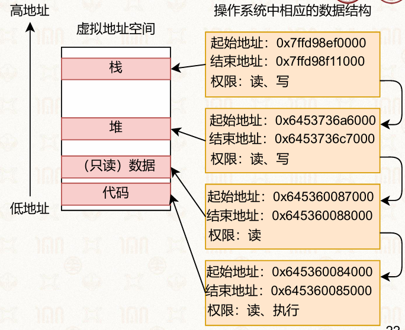
| 684">int process_create(char *path, char *argv[], char *envp[]) {
// 创建一个新的 PCB，用于管理新进程
struct process *new_proc = alloc_process();
// 虚拟内存初始化：初始化虚拟地址空间及页表基地址
init_vmspace(new_proc->vmspace);
new_proc->vmspace->pgdir = alloc_new_page();
// 内核栈初始化
init_kern_stack(new_proc->stack);
// 加载可执行文件
struct file *file = load_elf_file(path);
for loadable_seg in file.segs
vmspace_map(new_proc->vmspace, loadable_seg);
// 准备运行环境：创建并映射用户栈
void *stack = alloc_stack(STACKSIZE);
vmspace_map(cur_proc->vmspace, stack);
// 准备运行环境：将参数和环境变量放到栈上
prepare_env(stack, argv, envp);
// 上下文初始化
init_process_ctx(new_proc->ctx);
// 返回
...
}
触发条件
完整切换流程
由用户态转入内核态，进入系统内核，把程序当前的pc等存入寄存器
保存当前运行进程所有寄存器数据，存入自身PCB（进程控制块）中的context结构体中（以下简称ctx）
// 进程处理器上下文内部包含的内容
struct context {
// 通用寄存器
u64 x0, x1, ..., x30;
// 特殊寄存器
u64 sp_el0;
// 系统寄存器
u64 elr_el1, spsr_el1;
};
替换页表地址，完成两个进程虚拟内存空间切换
切换使用新进程专属内核栈
从新进程进程控制块读取数据，恢复全部运行寄存器状态
切回用户态，新进程正式开始运行
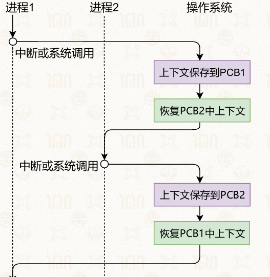
| 527">核心要点：上下文专门用来存储所有CPU运行寄存器数据，保障切换后程序无缝继续执行
基本语义与返回值
语义：为调用进程（父进程）创建一个几乎一模一样的子进程，代码段、数据段、栈、寄存器状态完全复制
返回值：
关键特性
拥有不同的进程id
可以并行执行，互不干扰（除非使用特定的接口）
父进程和子进程会共享部分数据结构（内存、文件等）
进程复制后，子进程直接进行下一行代码而不是从头重新运行
关于文件：
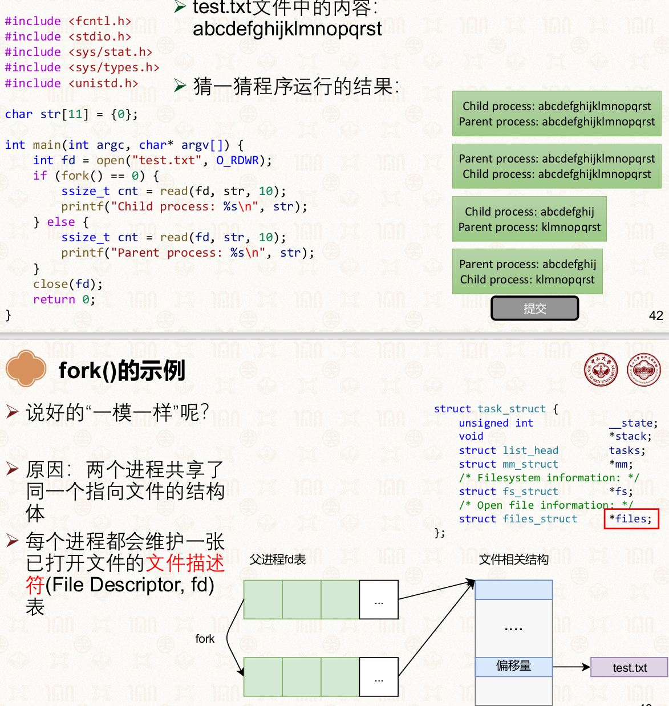
| 1173">示例代码：
int main() {
int x = 42;
int rc = fork();
if (rc < 0) {
fprintf(stderr, "Fork failed\n");
} else if (rc == 0) {
printf("Child process: rc=%d, x=%d\n", rc, x);
} else {
printf("Parent process: rc=%d, x=%d\n", rc, x);
}
}
示例题解析（填空题）
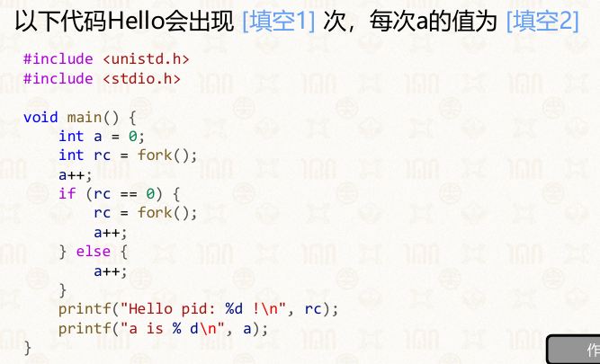
| 667">Hello出现次数：4次（进程总数：1→2→4）
每次a的值：均为2
参考实现
int fork(void) {
// 创建一个新的 PCB，用于管理新进程
struct process *new_proc = alloc_process();
// 虚拟内存初始化：初始化页表基地址
new_proc->vmspace->pgdir = alloc_new_page();
// 虚拟内存初始化：将当前进程（父进程）PCB 中页表完整拷贝一份
copy_vmspace(new_proc->vmspace, cur_proc->vmspace);
// 上下文初始化：将父进程 PCB 中的上下文完整拷贝一份
copy_context(new_proc->ctx, old_proc->ctx);
// 内核栈初始化
copy_stack(new_proc->stack, old_proc->stack);
// 返回 ...
}
优点
缺点
vfork
核心特点：父子进程共享同一地址空间，子进程直接复用父进程页表，无需复制
限制：
#include <stdio.h>
#include <stdlib.h>
#include <unistd.h>
int tmp = 3;
int main() {
pid_t res = vfork();
if (res < 0) {
printf("vfork failed");
exit(-1);
} else if (res == 0) {
tmp = 10;
printf("Child process: res = %d\n", tmp);
} else {
printf("Parent process: res = %d\n", tmp);
}
return 0;
}
参考实现关键：不执行copy_vmspace，直接复用父进程页表
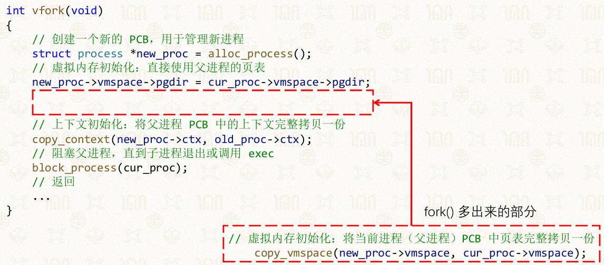
| 1146">posix_spawn
核心特点：相当于fork+exec的组合接口，一次性完成创建与执行
优点：可扩展性强、性能较好，适合现代系统
缺点：不如fork灵活，无法在创建后、exec前执行额外操作
示例：
#include <spawn.h> // 引入posix_spawn函数的头文件
#include <stdio.h> // 标准输入输出库，用于printf等
#include <stdlib.h> // 提供EXIT_FAILURE等宏定义
#include <string.h> // 提供strerror函数，用于获取错误信息
// posix_spawn函数原型
int posix_spawn(pid_t *restrict pid, const char *restrict path,
const posix_spawn_file_actions_t *file_actions,
const posix_spawnattr_t *restrict attrp,
char *const argv[restrict], char *const envp[restrict]);
pid_t child_pid; // 存储子进程PID的变量
int ret; // 存储函数返回值的变量
int main(void) {
// 调用posix_spawn创建并执行新进程
// 参数说明：
// &child_pid：输出参数，用于接收新创建进程的PID
// "/home/yxsu/process/a.out"：要执行的可执行文件路径
// NULL：文件操作集，这里不做额外文件操作
// NULL：进程属性，使用默认属性
// NULL：命令行参数列表，这里不传递参数
// NULL：环境变量列表，这里使用父进程环境
ret = posix_spawn(&child_pid, "/home/yxsu/process/a.out", NULL, NULL, NULL, NULL);
// 检查posix_spawn是否执行成功
if (ret != EOK) {
// 失败时打印错误信息，strerror将错误码转为字符串描述
printf("posix_spawn() failed: %s\n", strerror(ret));
// 程序异常退出，返回失败状态码
return EXIT_FAILURE;
}
// 成功时打印子进程的PID
printf("Child pid: %d\n\n", child_pid);
return 0;
}
实现
int posix_spawn(pid_t *pid, const char *path,
...,
const posix_spawnattr_t *attrp,
char *const argv[], char *const envp[]) {
// 先执行 vfork 创建一个新进程
int ret = vfork();
if (ret == 0) {
// 子进程：在 exec 之前，根据参数对其进行配置
prepare_exec(attrp, ...);
// 执行 exec
exec(path, argv, envp);
} else {
// 父进程：将子进程的 pid 设置到传入的参数中
*pid = ret;
return 0;
}
}
clone
核心特点：fork的进阶版，可通过标志位选择性复制内存、文件描述符等
应用：Linux线程的底层实现，支持轻量级进程创建
优点：高度可控，可依照需求调整
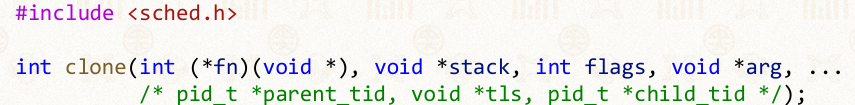
| 855">缺点：接口复杂，使用不当易出错
实现
int clone(..., int flags, ...) {
// 创建一个新的 PCB，用于管理新进程
struct process *new_proc = alloc_process();
// 如果设置了 CLONE_VM 则直接使用父进程的页表，否则拷贝一份
if (flags & CLONE_VM) {
new_proc->vmspace->pgdir = cur_proc->vmspace->pgdir;
} else {
new_proc->vmspace->pgdir = alloc_new_page();
copy_vmspace(new_proc->vmspace, cur_proc->vmspace);
}
// 上下文初始化：将父进程 PCB 中的上下文完整拷贝一份
copy_context(new_proc->ctx, old_proc->ctx);
// 如果设置了 CLONE_VFORK 则阻塞父进程
if (flags & CLONE_VFORK) {
block_process(cur_proc);
}
// 返回
...
}
核心特点
示例代码
#include <windows.h> // Windows 系统核心API头文件，包含CreateProcess等函数
#include <stdio.h> // C标准输入输出库，printf、GetLastError等
#include <tchar.h> // 提供TCHAR宏，兼容ANSI和Unicode字符集
// Windows 平台兼容 main 的入口函数
void _tmain( int argc, TCHAR *argv[] ) {
// 定义进程启动信息结构体 和 进程信息结构体
STARTUPINFO si;
PROCESS_INFORMATION pi;
// 清空结构体，避免垃圾数据导致异常
ZeroMemory( &si, sizeof(si) );
si.cb = sizeof(si); // Windows API 标准要求：标识结构体大小
ZeroMemory( &pi, sizeof(pi) );
// 核心：创建新进程
if( !CreateProcess(
NULL, // 不指定模块名，通过命令行参数启动程序
argv[1], // 要启动的程序路径（来自命令行参数）
NULL, // 进程安全属性：默认
NULL, // 线程安全属性：默认
FALSE, // 不继承父进程句柄（安全隔离）
0, // 无特殊创建标志
NULL, // 使用父进程环境变量
NULL, // 使用父进程当前目录
&si, // 进程启动信息
&pi // 接收创建后的进程信息
)) {
// 创建失败，打印错误码
printf( "CreateProcess failed (%d).\n", GetLastError() );
return;
}
// 等待子进程执行结束（无限等待）
WaitForSingleObject( pi.hProcess, INFINITE );
// 关闭进程句柄和线程句柄，释放系统资源
CloseHandle( pi.hProcess );
CloseHandle( pi.hThread );
}
进程树：fork为进程建立父子关系
进程之间是树结构
Linux可通过pstree命令查看
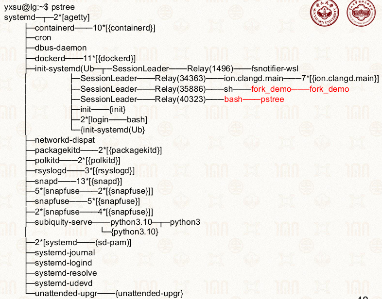
| 786">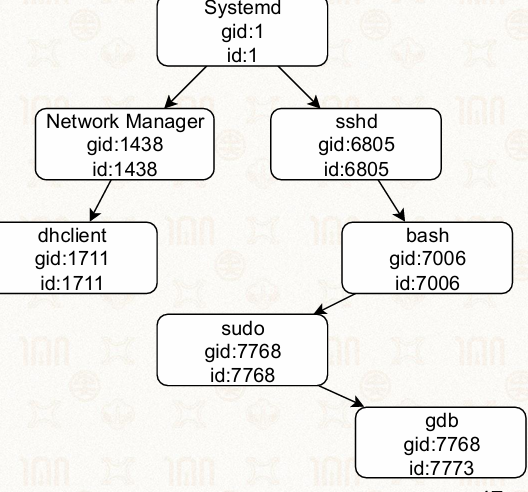
| 528">根进程是systemd（PID=1，也是系统的init进程），它是所有用户进程的祖先。
每个子进程只有一个父进程（PPID），父进程可以有多个子进程。
示例中：
进程组：多个进程可属于同一进程组
进程组的组长（Group Leader）是组内第一个进程，它的PID = PGID
子进程默认与父进程属于同一个进程组
可以向组内所有进程发送信号
常用于Shell命令管道
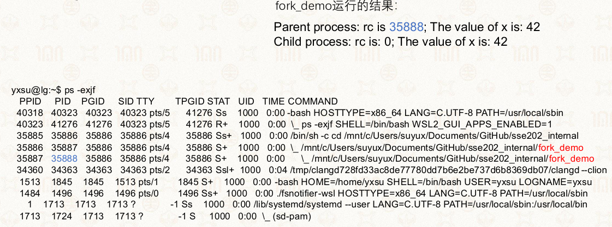
| 1121">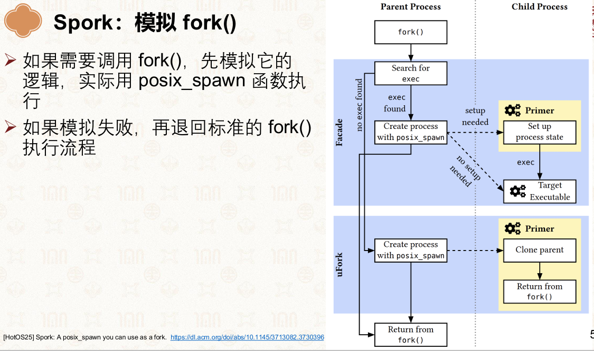
| 1125">函数原型
#include <unistd.h>
int execve(const char *pathname, char *const argv[], char *const envp[]);
参数说明
核心作用：替换当前进程地址空间，加载运行新程序
常用调用场景：fork 创建子进程后，子进程调用该函数执行新程序
运行特点
目标程序 myecho.c
#include <stdio.h>
#include <stdlib.h>
int main(int argc, char *argv[]) {
for (int j = 0; j < argc; j++) {
printf("argv[%d]: %s\n", j, argv[j]);
}
exit(EXIT_SUCCESS);
}
功能：遍历打印接收的命令行参数
调用程序 execve_demo.c
#include <stdio.h>
#include <stdlib.h>
#include <unistd.h>
int main(int argc, char *argv[]) {
char *newargv[] = { NULL, "hello", "world", NULL };
char *newenviron[] = { NULL };
if (argc != 2) {
exit(EXIT_FAILURE);
}
newargv[0] = argv[1];
execve(argv[1], newargv, newenviron);
perror("execve()");
exit(EXIT_FAILURE);
}
执行步骤
#include <sys/types.h>
#include <sys/wait.h>
pid_t waitpid(pid_t pid, int *wstatus, int options);
参数解析：
返回值：
#include <stdio.h>
#include <stdlib.h>
#include <sys/types.h>
#include <sys/wait.h>
#include <unistd.h>
int main(int argc, char* argv[]) {
int rc = fork();
if (rc < 0) {
fprintf(stderr, "Fork failed\n");
} else if (rc == 0) {
// 子进程：先执行
printf("Child process: existing\n");
} else {
// 父进程：等待子进程退出
int status = 0;
if (waitpid(rc, &status, 0) < 0) {
fprintf(stderr, "Parent process: waitpid failed\n");
exit(-1);
}
// 检查子进程是否正常退出
if (WIFEXITED(status)) {
printf("Parent process: my child has exited\n");
} else {
fprintf(stderr, "Parent processes: waitpid returns for unknown reasons\n");
}
}
}
执行逻辑
void process_waitpid_v3(int id) {
// 没有子进程，直接返回
if (!cur_proc->children) return;
while (TRUE) {
bool not_exit = FALSE;
// 扫描内核进程列表，查找对应进程
for (proc in all_processes) {
if (proc->pid == id) {
if (proc->is_exit) {
// 子进程已退出，记录状态并回收
*status = proc->exit_status;
destroy_process(proc); // 回收PCB
return;
} else {
// 子进程未退出，标记为未退出
not_exit = TRUE;
}
}
}
if (!not_exit) return; // 进程不存在，直接返回
wait_in_kernel(); // 陷入内核等待，避免忙等
}
}
核心逻辑：
线程是进程内部的基本执行单元，也是操作系统CPU调度的最小单位，也被称作轻量级进程（LWP）。
线程依附于进程存在，一个进程可包含一到多个线程
线程只保留运行必需的私有执行资源，共享所属进程的全部系统资源
线程依附于进程存在
线程只包含运行时的状态
一个进程的多线程可以在不同处理器上同时执行
调度的基本单元由进程变为了线程
每个线程都有状态
上下文切换的单位变为了线程
创造进程的开销较大：包括了数据、代码、堆、栈等
并发粒度粗：以进程为单位并发，资源利用率低，无法高效实现进程内多任务
资源浪费：多进程并发会重复分配独立资源，内存与I/O资源冗余
进程的隔离性过强
进程内部无法支持并行
| 对比维度 | 线程 | 进程 |
|---|---|---|
| 核心定位 | 操作系统CPU调度的最小单位 | 操作系统资源分配的最小单位 |
| 资源归属 | 共享进程地址空间与资源，仅私有栈、寄存器、PC | 拥有独立地址空间、文件、信号等全套资源 |
| 执行开销 | 创建/切换/销毁开销极小 | 创建/切换/销毁开销大 |
| 通信方式 | 直接读写共享数据，通信成本低 | 需IPC机制（管道、消息队列等） |
| 稳定性 | 一个线程崩溃可能导致整个进程崩溃 | 进程间相互隔离，互不影响 |
| 并发粒度 | 进程内多线程可并发/并行，粒度更细 | 进程间并发 |
每个线程拥有自己的栈，内核中也有为线程准备的内核栈
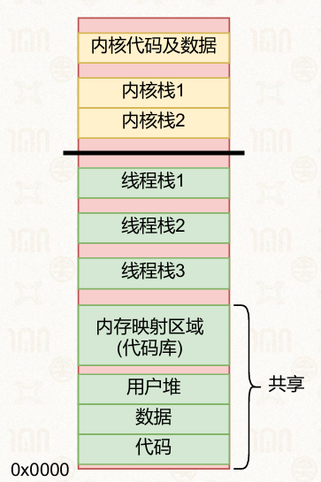
| 363">线程的独立执行上下文由以下部分构成：
按管理与调度主体分为两类：
用户态线程（ULT）
内核态线程（KLT）
线程模型描述了用户态线程与内核态线程之间的映射关系
决定线程的调度方式、性能开销与多核支持能力
映射关系： 多个用户态线程映射到一个内核态线程，所有用户线程共享一个内核调度单元
核心特点：
优点
缺点：
应用场景
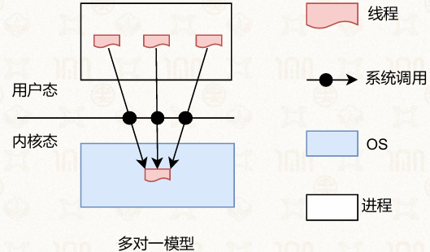
| 529">映射关系： 每个用户态线程直接映射到独立的内核态线程，用户线程与内核线程一一对应
核心特点：
优点：
缺点：内核线程数量大创建、管理内核线程的开销较大
应用场景：
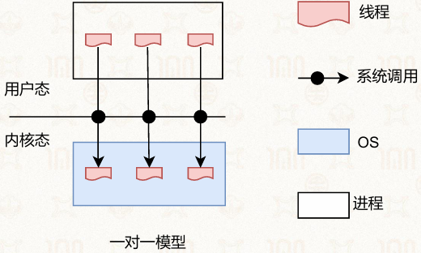
| 520">映射关系： N个用户态线程映射到M个内核态线程（），由用户线程库和内核协同管理调度
核心特点：
优点：
结合了前两种模型的优势
可根据系统负载动态调整内核线程数量，平衡并行性能与调度开销。
缺点：实现难度高，容易出现调度策略冲突，管理更为复杂
应用场景：
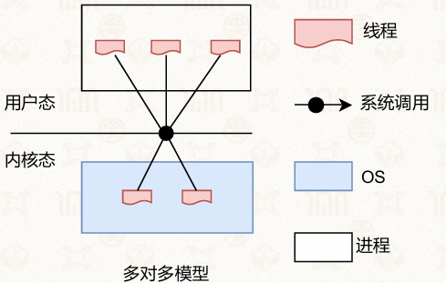
| 489">| 模型 | 映射关系 | 并行能力 | 阻塞影响 | 线程创建开销 | 实现复杂度 | 典型应用 |
|---|---|---|---|---|---|---|
| 多对一 | N:1 | 无 | 全局阻塞 | 极低（用户态） | 低 | 早期用户态线程库 |
| 一对一 | 1:1 | 可 | 线程级隔离 | 较高（内核态） | 中 | Windows、Linux、macOS |
| 多对多 | N:M | 可 | 可控隔离 | 中等（混合态） | 高 | Solaris 9前、Go语言调度器 |
定义： 线程控制块（Thread Control Block, TCB）是操作系统与用户态线程库管理线程的核心数据结构，存储线程的状态信息、上下文数据与管理信息，是线程调度、切换与管理的基础
※一对一线程模型中，TCB 分为内核态TCB与应用态TCB两部分
内核态TCB： 与进程的PCB结构类似
Linux系统中，进程与线程统一使用 task_struct 数据结构管理，内核不区分进程与线程，仅通过资源共享关系区分两者
在上下文切换时使用
应用态TCB： 由用户态线程库定义，是内核TCB的扩展，存储用户态线程的额外管理信息
核义： 线程本地存储（Thread Local Storage, TLS）是一种为每个线程分配独立私有存储区域的机制，允许线程拥有仅自身可访问的私有数据，解决多线程环境下共享全局变量的数据竞争问题
引入背景：多线程共享全局变量的冲突问题
实现
线程私有变量： TLS 允许定义线程独有的变量副本
结构与索引： 每个线程的TLS结构格式相似
寻址模式： 采用「基地址 + 偏移量」的方式访问TLS数据，不同CPU架构通过专用寄存器实现快速寻址
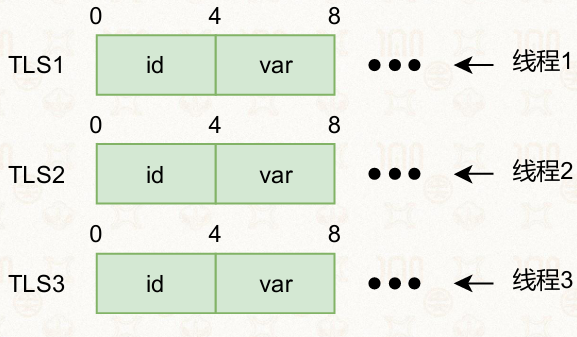
| 577">作用： 创建新线程，完成内核态与用户态的初始化工作。
函数原型：
int pthread_create(pthread_t *thread, const pthread_attr_t *attr,
void *(*start_routine) (void *), void *arg);
thread：输出参数，存储新线程ID
attr：线程属性（如栈大小、优先级），NULL表示默认属性
start_routine：线程执行的函数入口
arg：传递给线程函数的参数
应用
int iret1 = pthread_create( &thread1, NULL,
print_message_function, (void*) message1)
作用： 等待指定线程执行完成，并获取其返回值，可理解为 fork 的“逆向操作”
函数原型：
int pthread_join(pthread_t thread, void **retval);
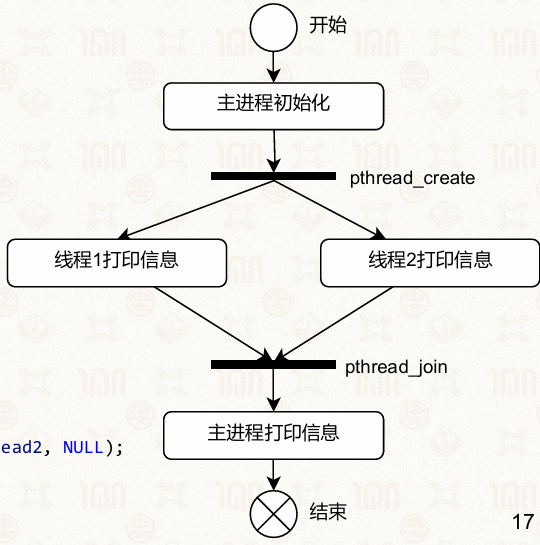
| 540">基础示例：
#include <stdio.h>
#include <stdlib.h>
#include <pthread.h>
void *print_message_function(void *ptr) {
char *message = (char *) ptr;
printf("%s \n", message);
return NULL;
}
int main() {
pthread_t thread1, thread2;
char *message1 = "Thread 1";
char *message2 = "Thread 2";
int iret1, iret2;
iret1 = pthread_create(&thread1, NULL, print_message_function, (void*) message1);
iret2 = pthread_create(&thread2, NULL, print_message_function, (void*) message2);
pthread_join(thread1, NULL);
pthread_join(thread2, NULL);
printf("Thread 1 returns: %d\n", iret1);
printf("Thread 2 returns: %d\n", iret2);
exit(0);
}
作用： 主动终止当前线程，并设置返回值，该值可被 pthread_join 获取
线程退出后，其资源（栈、TCB）由 pthread_join 回收。
主线程调用 pthread_exit 不会导致整个进程退出，其他线程可继续执行
函数原型：
void pthread_exit(void *retval);
作用： 主动放弃CPU时间片，让出CPU资源给其他线程执行
可以帮助调度器做出更优的决策
常用于CPU密集型任务，避免单线程长期占用CPU导致其他线程饥饿
函数原型：
int pthread_yield(void);
示例：主动让出CPU
#include <pthread.h>
#include <stdio.h>
#include <unistd.h>
void *thread(void *arg) {
while (1) {
puts((char *)arg);
pthread_yield(); // 每次执行后主动让出CPU
}
}
int main() {
pthread_t t1, t2, t3;
pthread_create(&t1, NULL, thread, "thread 1");
pthread_create(&t2, NULL, thread, "thread 2");
pthread_create(&t3, NULL, thread, "thread 3");
sleep(1); // 主线程休眠1秒，让子线程执行
exit(1); // 主线程退出，进程终止所有线程
}
场景1：串行执行的线程
volatile int balance = 0;
void *mythread(void *arg) {
int i;
for (i = 0; i < 200; i++) {
balance++;
}
printf("Balance is %d\n", balance);
return NULL;
}
int main() {
pthread_t p1, p2, p3;
pthread_create(&p1, NULL, mythread, (void *)"A");
pthread_join(p1, NULL);
pthread_create(&p2, NULL, mythread, (void *)"B");
pthread_join(p2, NULL);
pthread_create(&p3, NULL, mythread, (void *)"C");
pthread_join(p3, NULL);
printf("Final Balance is %d\n", balance);
}
结果分析： 线程串行执行，每次线程执行完成后再创建下一个，无并发冲突
场景2：并发执行的线程
volatile int balance = 0;
void *mythread(void *arg) {
int i;
for (i = 0; i < 20000; i++) {
balance++;
}
printf("Balance is %d\n", balance);
}
int main() {
pthread_t p1, p2, p3;
pthread_create(&p1, NULL, mythread, (void *)"A");
pthread_create(&p2, NULL, mythread, (void *)"B");
pthread_create(&p3, NULL, mythread, (void *)"C");
pthread_join(p1, NULL);
pthread_join(p2, NULL);
pthread_join(p3, NULL);
printf("Final Balance is %d\n", balance);
}
结果分析： 线程并发执行，balance++ 不是原子操作，存在数据竞争。
是线程运行时的关键状态集合，保存了线程恢复执行所需的全部寄存器信息
TCB（线程控制块）结构：分为上下两部分
内核栈：TCB下方为线程的内核栈
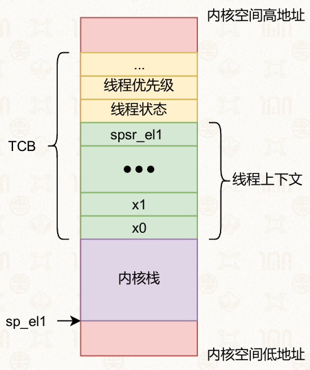
| 451">应用线程通过异常、中断或系统调用进入内核态（EL1），由硬件自动完成以下操作：
切换特权级，进入内核态（EL1）
栈指针从用户态栈（sp_el0）切换为内核态栈（sp_el1）
硬件自动保存关键寄存器
随后内核通过汇编指令手动保存所有通用寄存器：
sub sp, sp, #ARCH_EXEC_CONT_SIZE
; 保存常规寄存器(x0-x29)
stp x0, x1, [sp, #16 * 0]
stp x2, x3, [sp, #16 * 1]
stp x4, x5, [sp, #16 * 2]
// ... 依次保存x6-x29
stp x28, x29, [sp, #16 * 14]
; 保存x30和三个特殊寄存器：sp_el0, elr_el1, spsr_el1
mrs x21, sp_el0
mrs x22, elr_el1
mrs x23, spsr_el1
stp x30, x21, [sp, #16 * 15]
stp x22, x23, [sp, #16 * 16]
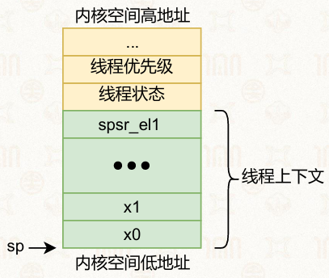
| 407">操作系统调度器确定下一个要执行的目标线程，完成切换操作：
切换页表
切换内核栈
从目标线程的内核栈中取出上下文，恢复寄存器状态，随后返回用户态：
; 恢复三个特殊寄存器
ldp x22, x23, [sp, #16 * 16]
ldp x30, x21, [sp, #16 * 15]
msr sp_el0, x21
msr elr_el1, x22
msr spsr_el1, x23
; 恢复常规寄存器x0-x29
ldp x0, x1, [sp, #16 * 0]
; ... 依次恢复x2-x29
ldp x28, x29, [sp, #16 * 14]
add sp, sp, #ARCH_EXEC_CONT_SIZE
最后调用eret指令，由硬件完成用户态返回：
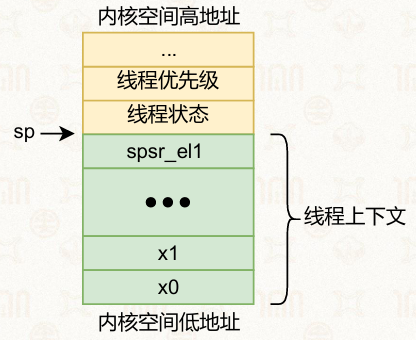
| 416">两次特权级切换
三次栈切换
分界点
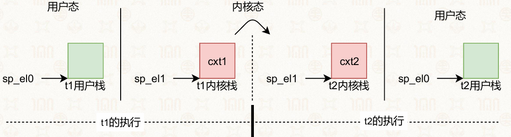
| 1097">纤程（用户态线程） 是比内核线程更轻量的运行时抽象，是完全运行在用户态的执行单元，内核不可见且不受内核直接管理
纤程的编程围绕上下文保存与切换展开，核心操作包含创建纤程、保存上下文、切换上下文、调度执行。
实践：生产者-消费者模型
主纤程创建生产者、消费者两个纤程上下文
生产者完成数据生产后，直接在用户态切换到消费者纤程
消费者处理完成后，切回生产者纤程循环执行
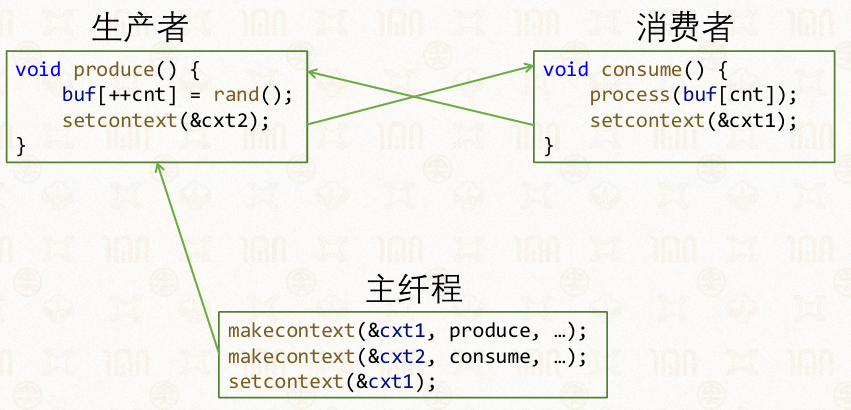
| 851">调度优势：无需内核调度器参与，可实现任务的最优即时调度，大幅提升高频切换场景的效率
Linux通过ucontext组件实现用户态纤程，每个ucontext_t结构体对应一个独立纤程。
接口：
代码示例：
#include <stdio.h>
#include <ucontext.h>
int x = 0;
ucontext_t context, *cp = &context;
void func(void) {
x++;
setcontext(cp);
}
int main(void) {
getcontext(cp);
if (!x) {
printf("getcontext has been called\n");
} else {
printf("setcontext has been called\n");
func();
}
}
进入 main 函数，调用 getcontext(cp)，保存当前执行上下文到 context 变量中。
此时程序的执行流会在这里 “记录一个书签”，后续 setcontext 调用会跳回这里继续执行。
Windows通过原生Fiber库提供纤程支持，编程模型与Linux ucontext相似
核心接口：
纤程本地存储（FLS）：
定义： 是高级语言对纤程的封装，是语言层面的轻量级并发单元，屏蔽了底层操作系统接口差异
支持语言：Go、Python、Lua、C++20及以上版本
协程状态：新生、执行、暂停、终止
核心操作：
状态流转：新生→执行（resume）→暂停（yield）→执行（resume）→终止（执行完毕）
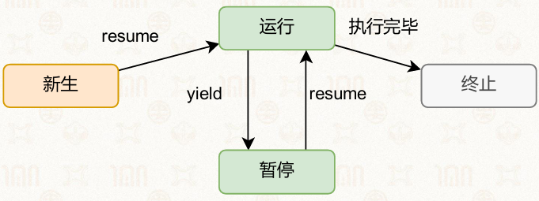
| 681">Go通过go关键字启动协程，语法极简、创建开销极低。
代码示例：
package main
import (
"fmt"
"time"
)
func asyncTask() {
fmt.Printf("This is an asynchronized task")
}
func syncTask() {
fmt.Printf("This is a synchronized task")
}
func main() {
go asyncTask() // 启动协程，异步执行
syncTask() // 同步执行主线任务
go asyncTask()
time.Sleep(time.Second * 1)
}
定义： 是Go协程间通信的核心机制，实现协程同步与数据传递，避免并发安全问题
核心特性：支持阻塞式通信，保证数据收发有序
代码示例：
package main
import (
"fmt"
"time"
)
func longTask(signal chan int) {
time.Sleep(3 * time.Second)
signal <- 1 // 向管道发送结束信号
}
func main() {
sig := make(chan int) // 创建整型管道
go longTask(sig)
for {
fmt.Println("longTask is running")
time.Sleep(1 * time.Second)
v := <-sig // 阻塞接收管道信号
if v == 1 {
break
}
}
fmt.Println("longTask is finished")
}
网络处理代码示例：
func handler(c net.Conn) {
c.Write([]byte("ok"))
c.Close()
}
func main() {
l, err := net.Listen("tcp", ":8000")
if err != nil {
panic(err)
}
for {
c, err := l.Accept()
if err != nil {
continue
}
go handler(c) // 为每个连接启动独立协程处理
}
}